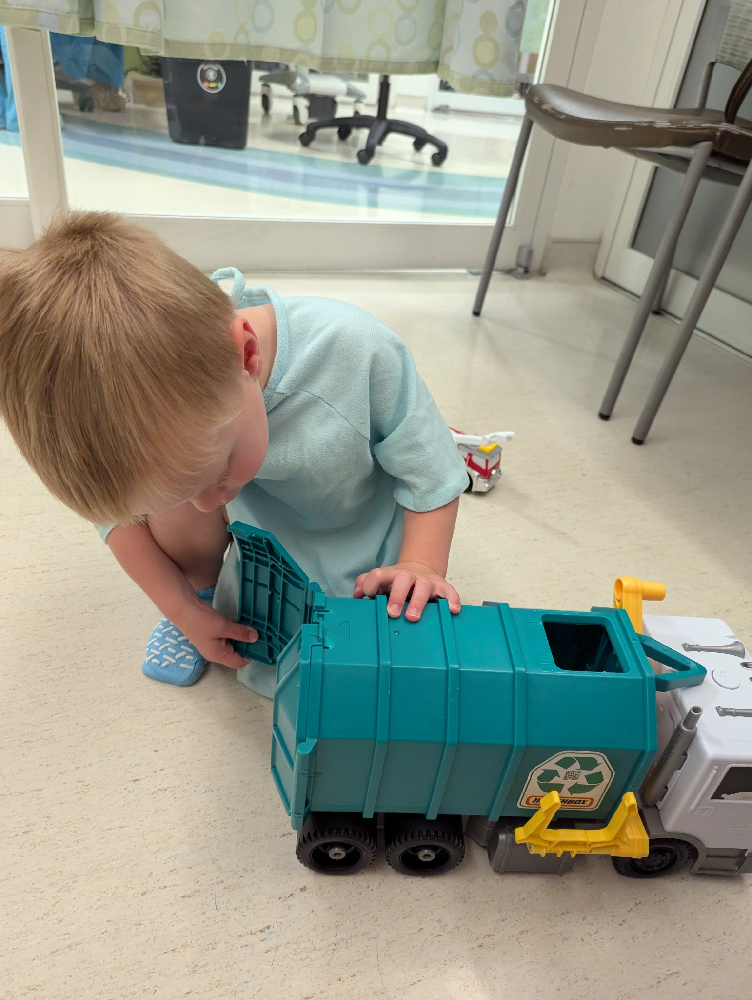
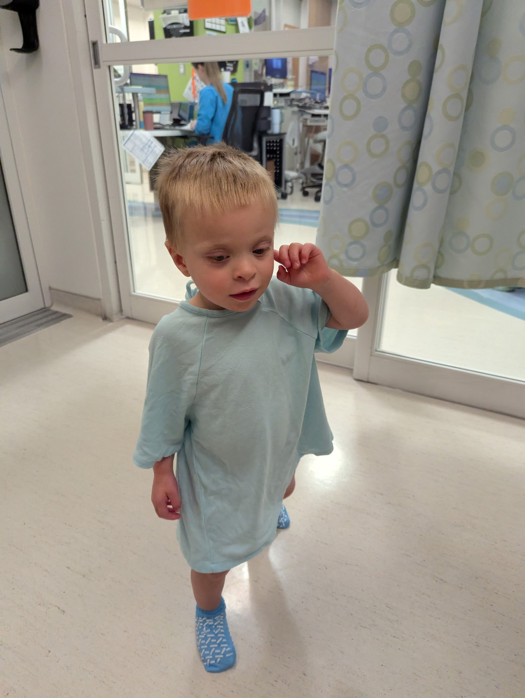

Micaiah's Diagnosis
June 11, 2026
A few months ago, we started to notice that Micaiah’s eyes were slightly different shades of blue—one darker than the other. I thought it was a fun physical trait that would be a go-to ice breaker for him while making friends. Jerusha’s motherly instincts, however, turned out to be correct. The optometrist ran some tests and, according to Jerusha, became visibly disturbed, giving us an “urgent referral” to Seattle Children's. That was Tuesday, 6/2. In brief , there was concern that Micaiah couldn’t really see out the darker (left) eye. Although we were incredibly uncertain, we were hopeful. After all, we only knew a few limited details. Even though they didn’t sound great, we didn’t want to overreact and assume the worst possible option—especially since Micaiah was being a normal 20-month-old that didn’t want to keep his eyes open for the exam.
My take was that we didn’t know much of anything. Even with a concerning reading, my thinking was that the odds were in favor of a treatable vision issue. I kept telling Jerusha not to worry—that we’d get in and get treatment and everything would be alright. Still, Jerusha was a ball of stress. Rather than waiting for Seattle Children’s to reach out to us, she called them every business day. It was good that she did because the optometrist’s office apparently faxed the referral to the wrong number, and when they did get it faxed to the correct number, it was an incomplete referral, which Jerusha was able to be on top of getting them to remedy. . A couple phone calls later and we had an appointment ready to go.
The ophthalmologist at the Everett campus of Seattle Children’s performed a full eye exam on Tuesday 6/9 and gave us some unsettling findings. The exam confirmed that he couldn’t see much out of his left eye and that it was due to an opacity in the eye, which had an uncomfortable resemblance to retinoblastoma—a rare form of ocular cancer. Retinoblastoma only occurs in a few hundred people per year. It usually occurs in children and usually has a hereditary pattern, but can occur randomly. As it turned out, the growth of the tumor was such that it blocked most of the light entering the eye so he couldn’t see much out of it. The news got worse: His right eye had a retinoblastoma growth too. It hadn’t affected the vision in his right eye because it developed more around the peripherals of the eye. The ophthalmologist got us an appointment with an ocular oncologist on the Seattle campus for the next day to both confirm the diagnosis, provide more details regarding progression, and lay out a treatment plan. Getting the appointment with the ocular oncologist the very next day was providential.
We were blessed to have friends who could watch Elias during our time at the Everett campus. On the way home from picking up Elias, Jerusha was smoothing out logistics with the Seattle campus for the next day. Elias chimed in and asked me, “Daddy, can I go to the hospital with you tomorrow?” Elias had a blast with his friend that day, but it seemed to me like he was feeling a bit left out. Obviously he didn’t understand why Micaiah was getting extra attention. He knew that Micaiah’s eyes weren’t well, but he had no frame of reference for what that meant. What he sees is Micaiah playing like he normally does. His strong eye compensating for the weak, he runs around and acts like a normal kid even if extra clumsily. It was in that moment that I determined one of us needed to stay home with Elias. Seattle Children's didn’t allow kids to come to the procedure, so either Jerusha or I needed to stay with him and give him a bit of a special day.
The night before going to the Seattle campus, Jerusha and I were both pretty numb. She was a cleaning whirlwind, and I was tidying up some of the tools from the house projects I’ve been working on. We connected on some logistical issues, but neither of us had the bandwidth to deal with the emotional weight we were feeling. She wanted to be with Micaiah during the exam, and that seemed prudent to me, given that Micaiah would probably want her for comfort before and after going under. I was sorry that I couldn’t be with her to support her, but we were both ready to do what we needed to do for our boys.
On Wednesday, 6/10, the ocular oncologist performed the eye exam under anasthetic. We found out that it was even more advanced than we had initially thought. They grade the tumor progression from A to E (A being the least developed and E being the most developed). The left eye was graded as a D, but was teetering on the edge of being an E. The right eye was also a D. This is concerning, because the recommended treatment for an eye with an E-rated tumor is removal. So far, we have no way of knowing how quickly the tumor is progressing—and as the doctor pointed out, we hope we never have to find out. Because of how advanced the tumor is, there is the possibility that it has progressed beyond the eyes. For that reason, the doctor recommended whole-body systemic chemotherapy rather than a more localized treatment.

Micaiah waiting for his eye exam

Micaiah getting gowned up at Seattle Children's
It’s worth mentioning at this point that we are so thankful that his left eye changed color. It had to do with the way the tumor grew. Despite both eyes being similarly advanced, the left eye grew in such a way that it blocked the blood vessels from reaching the lens of his left eye. The eye then attempted to develop new blood vessels for the lens. Those new vessels are what changed the eye color. On the right eye, however, the tumor grew on the peripherals of the eye without any visible changes to the eye itself. Were it not for the left eye changing color, we still wouldn’t know about the cancer, and we probably wouldn’t have found out until much later. Thank God for the color change in his eye.
The plan is to do chemo for six months during which we will take Micaiah in for periodic eye exams to track the status of the tumors. If medical treatments are effective, it is possible to save both eyes even though he will continue to have diminished sight in his left eye. The doctor also advised us to get eye exams for Elias and our baby boy (who is due June 20th) since retinoblastoma is typically hereditary—though not always and probably not in our case since we have no family history of it.
Meanwhile, Elias and I spent the day together. It wasn’t a particularly remarkable day, but I think the time spent was a well-apportioned deposit in our relationship. Later in the afternoon, we picked up some family from the airport and had everyone at our house. It was nice. We got to spend some time in the sun socializing and enjoying some good food my brother and sister-in-law brought over. It was refreshing to have that sense of normalcy in our lives and have a dose of joy we could share in.
Today is Thursday, 6/11. We have an MRI with a hematology and oncology consultation tomorrow; an appointment that was also made quicker than usual due to a last minute cancellation. More prayers are welcome, and we will provide updates as we have them. We continue to pray audaciously for complete healing and recovery of eyesight.